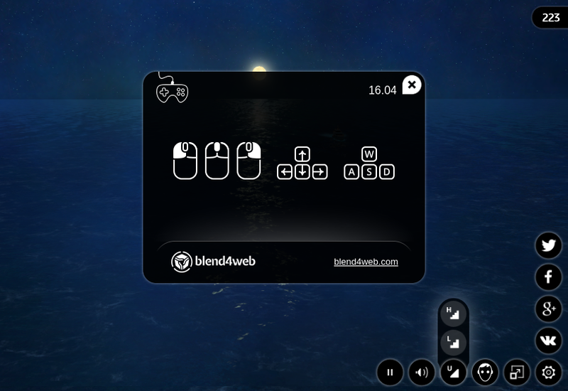
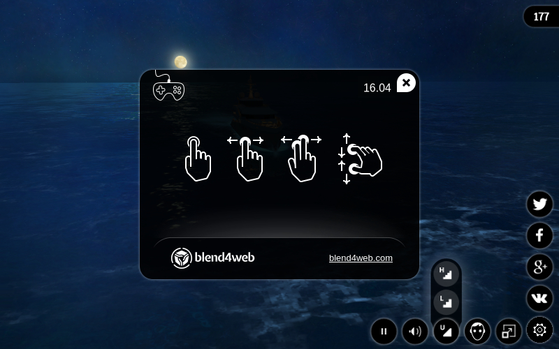
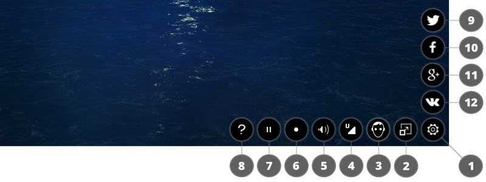

网络播放器¶
网络播放器是演示模式的特殊应用可以渲染模型和场景。
桌面版本：
{kind=link}
手机版：
{kind=link}
用法¶
您可以复制包含网络播放文件的目录，即 deploy/apps/webplayer, 从Blend4Web SDK分布和您的网站进行部署。您可以将导出的场景文件在您的网站和指定的路径给他们（绝对或相对）与 load 网络播放器的参数。
当您导出成一个HTML文件的Web播放器界面会自动集成到它。
控制面板¶
网络播放器的控制面板如下图所示。
{kind=link}
显示/隐藏控制面板;
开/关全屏模式;
立体渲染开/关;
设置场景的质量;
声音开/关;
开启/关闭相机自动旋转模式;
运行/停止引擎;
打开帮助窗口;
通过推特分享;
通过Facebook分享;
通过Google+分享;
通过VK分享。
通过Weibo分享。
属性¶
网络播放器接收来自浏览器地址栏中的属性：

特殊的属性
load用于加载场景，这个属性包含相对路径JSON文件。在发生错误的WebGL的可选
fallback_image属性用于设置的背景图像，而不是3D内容。在发生错误的WebGL的可选
fallback_video属性用于设置背景视频，而不是3D内容。可用于多次添加更多的视频格式。可选
show_fps属性是用来显示在玩家的右上角的FPS计数器。可选参数
autorotate时，使用了场景加载后使自动相机旋转。该
compressed_textures可选参数用于启用加载精缩和压缩纹理（在DDS格式）。该
compressed_textures_pvr可选参数用于启用加载压缩为PVRTC格式的材质，该参数用在compressed_textures参数中。compressed_gzip可选参数用于启用加载GZIP压缩资源，如”.json.gz”, ”.bin.gz”, ”.dds.gz” 和 ”.pvr.gz”.可选
alpha参数用于启用对描画区域的透明度。可选的
no_social属性用于在控制面板上禁用社交网络按钮。可选的
socials属性用于选择性地启用和禁用控制面板上的社交网络按钮。此属性应该像socials=<...>, 其中<...>是一组与您要启用的社交网络按钮字母（f为Facebookv为VK，t是Twitter的，w是微博和g是Google ）。字母顺序设置定义了按钮将出现在屏幕上的顺序。
注解
如果同时 fallback_image 和 fallback_video 参数指定 fallback_image 参数被使用。
{kind=link}
{kind=link}
{kind=link}
{kind=link}